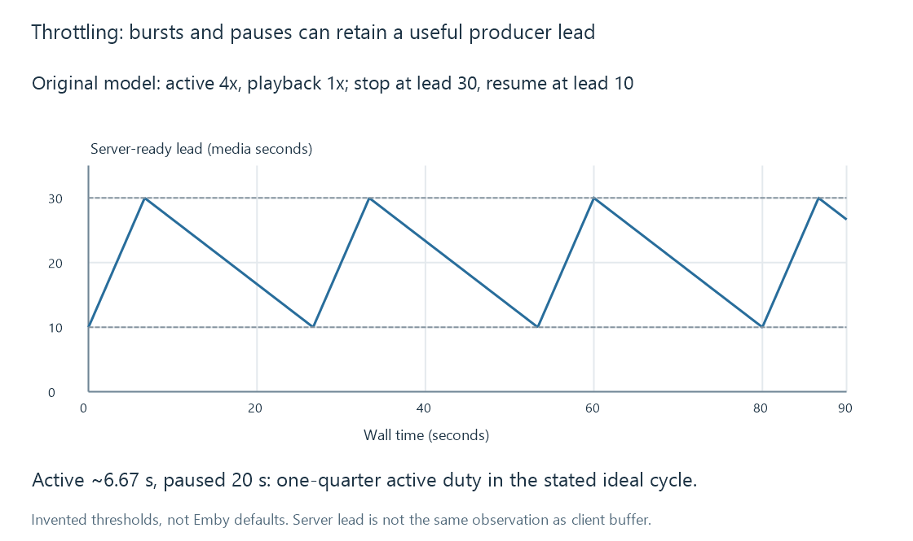

Transcode throttling and producer lead
Transcode throttling limits work produced ahead of playback by pausing or reducing a producer whose output lead is already sufficient.
A converter can run faster than the viewer consumes its output. Throttling avoids producing unlimited future work when sufficient output already exists ahead of playback.
It can therefore create bursts of processing followed by quiet periods without changing the selected output codec, resolution or rate-control target.
Two positions define producer lead
In a simple model:
producer lead = ready output position - playback position
If ready output reaches programme second 150 while playback reaches second 120, that model has a thirty-second lead.
The lead describes a production relationship. It does not prove that those thirty seconds have reached the client, survived its buffer policy or been decoded. A server queue and a player queue are different places.
An Emby team explanation from 2016 describes pausing when the producer is sufficiently ahead and resuming as playback catches up. That is evidence for the mechanism's purpose, not a specification of current thresholds or every implementation detail.
An original high/low-threshold cycle
Assume an invented producer that runs at 4x when active. Playback consumes at 1x. The model pauses at a thirty-second lead and resumes at a ten-second lead.

Using separate stop and restart thresholds is called hysteresis. It avoids toggling immediately at one shared boundary.
During active production, lead grows at 4 - 1 = 3 seconds per wall second. Growing by twenty seconds therefore takes about 6.67 wall seconds. While paused, the same twenty seconds drain in twenty wall seconds.
The cycle lasts about 26.67 seconds, of which the producer is active for 6.67. Its idealised active fraction is one quarter. This is a calculation for the stated model, not an Emby performance measurement.
Quiet is different from unable
A paused producer with adequate ready output is behaving differently from an active producer that sustains only 0.75x and is losing lead.
The first can resume before its chosen reserve is exhausted. The second needs a capacity or workload change to become sustainable. A CPU percentage or one recent speed sample does not distinguish those states by itself.
Throttling also does not mean the player is being intentionally paused. The intended result is ongoing playback using already prepared media while future production rests.
A seek changes the needed region
If the viewer seeks beyond the produced interval, the old lead no longer describes the data required at the destination. A playback path may need to resume or restart production from another location.
That can introduce a new wait even when the converter had been comfortably ahead of the old position. Seeking during streaming develops the destination dependencies.
The chosen high/low values trade reserve against produced work and storage. Longer lead can prepare more future data; shorter lead can avoid generating output never viewed. Neither value creates processing capacity or network throughput.
Output remains a separate configuration
Pausing production is a scheduling decision. Reducing video bitrate or picture size is an output-representation decision. Both can affect load, but they solve different problems.
See Also
- Transcoding speed, fps and media time
- Real-time transcoding and playback deadlines
- Buffering, ready media and playback reserve
- Transcode temporary files and generated output